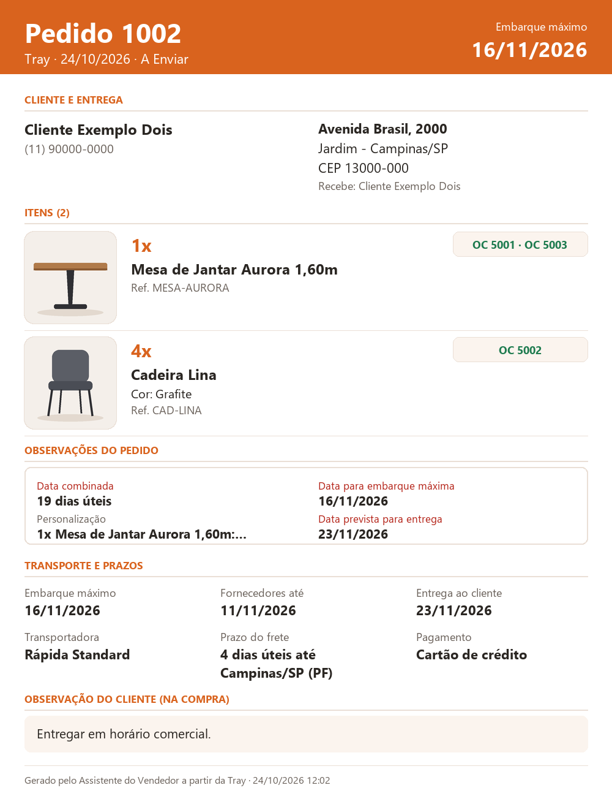
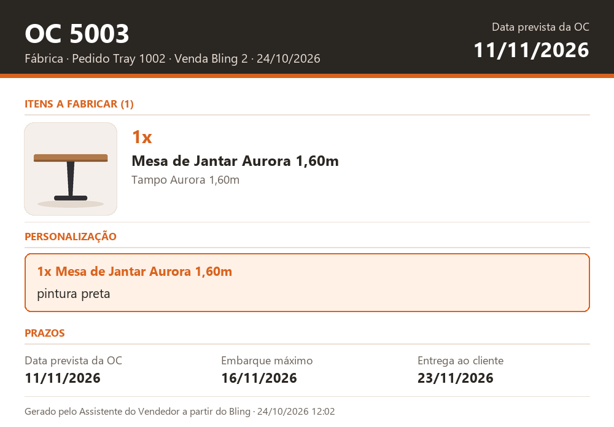

Um aplicativo de desktop que liga a loja virtual (Tray), o ERP (Bling) e o quadro de produção (Trello): lê o pedido, descobre o fornecedor de cada peça, emite as ordens de compra, abre os cards da fábrica e da logística e atualiza o status — perguntando ao vendedor só o que exige decisão.
Projeto de portfólio: todos os dados aqui são fictícios. A demonstração simula as três plataformas e não se conecta a nenhuma loja.
Cada passo é uma pergunta na tela — com botões quando há opções fixas — e só segue depois da confirmação.
Busca o pedido de venda no Bling pelo número da Tray e confere se é mesmo o mesmo número (o filtro da API pode falhar).
Lê o endereço do cliente, consulta a tabela de frete da transportadora e calcula a data máxima de embarque e a data em que os fornecedores precisam entregar.
Mesa = tampo + base: produtos estruturados viram componentes, cada um com fornecedor e custo do cadastro.
Para cada peça, pergunta se há personalização e o valor; personalizações vão sempre para a OC da fábrica.
Agrupa uma OC por fornecedor, já com a data que o fornecedor precisa cumprir, e cria a OC com observações só dos itens dela; depois confere fornecedor e número.
Card da logística na data máxima de embarque, com a ficha do pedido (fotos, OCs, prazos) e uma checklist de separação; um card por OC da fábrica, com a ficha da OC.
Com OC: “OC enviada” no Bling e “Aguardando fornecedor” na Tray. Tudo em estoque: “Em separação” nos dois. As OCs ficam anotadas nas observações do pedido.
De hora em hora confere as OCs, atualiza as checklists e monta os lembretes do dia para fornecedores e logística.
Gerados pela demonstração com o pedido fictício 1002 (py docs/gerar_exemplos.py). A ficha
anexada ao card substitui os prints manuais: tem fotos, OCs e prazos, sem CPF, e-mail ou valores.
Data do card: embarque máximo · checklist de separação com as 4 peças e a OC de cada uma

Data do card: data que a fábrica precisa entregar (embarque − 3 dias úteis de logística)

Resultado real da demonstração com dados fictícios: cliente em Campinas/SP, 4 dias úteis de frete pela tabela, e o tampo com pintura personalizada.
| Criado | Para | Conteúdo |
|---|---|---|
| Prazos | Tabela de frete | Compra + 19 dias úteis combinados − 4 de frete = embarque máximo; − 3 de logística = data dos fornecedores |
| OC 5001 | Metalúrgica Aurora | Pedido Tray: 1002 | 1x Mesa de Jantar Aurora 1,60m (peça: Base Aurora Aço Preto) |
| OC 5002 | Estofados Horizonte | Pedido Tray: 1002 | 4x Cadeira Lina - Cor: Grafite |
| OC 5003 | Fábrica própria | Pedido Tray: 1002 | 1x Mesa de Jantar Aurora 1,60m (peça: Tampo Aurora 1,60m) | PERSONALIZAÇÃO: 1x Mesa de Jantar Aurora 1,60m: pintura preta |
| Card | Trello · Logística | Pedido 1002 - 1x Mesa de Jantar Aurora 1,60m (OC 5001, OC 5003), 4x Cadeira Lina - Cor: Grafite (OC 5002) - Rápida Standard · ficha do pedido · checklist com 4 peças |
| Card | Trello · Fábrica | OC 5003 (1002) - 1x Mesa de Jantar Aurora 1,60m (peça: Tampo Aurora 1,60m) - Personalização: pintura preta · ficha da OC |
| Status | Bling · Tray | OC enviada · Aguardando fornecedor |
Cada OC lista só os itens que ela compra; a da fábrica sempre mostra item + personalização.
Embarque máximo = entrega combinada menos o frete da tabela até a cidade ou o CEP do cliente. Sem tabela, vale a folga antiga de 10 dias úteis.
Pula fins de semana e feriados nacionais (inclusive Carnaval e Corpus Christi), mais os feriados locais do config.json.
Prazo estourado vira “ATRASADO” no título dos cards e nas fichas; cards parados há mais de 2 dias úteis sobem para o topo da lista.
Fornecedores: 14 e 7 dias úteis antes, no dia e cobrança diária. Logística: 2 dias úteis antes do embarque, no dia e em atraso.
Se uma etapa falha, o programa lista o que já foi criado para ninguém duplicar OC ou card.
1.500,50, R$ 30,00 e 1.500 são entendidos corretamente.
Na Tray, o assistente só mexe no seu próprio bloco e relê o pedido antes de gravar: o que outras pessoas escreveram continua lá.
Janela: telas, botões e o painel que transforma print/input do fluxo em perguntas na tela.
Regras de negócio e fluxo de compras; também roda no terminal.
OAuth2 do Bling, renovação automática de token, limite de requisições e novas tentativas.
Autenticação da Tray, limites de uso (por minuto e por dia), pedidos, observações e status.
Desenha as fichas do pedido e da OC em PNG (Pillow), no lugar dos prints manuais.
Converte as planilhas das transportadoras em um JSON leve e calcula o frete até o cliente.
Envio pelo WhatsApp Web com Playwright: horário comercial, limite diário, intervalo entre mensagens e modo teste.
Bling, Trello, Tray e WhatsApp simulados com uma loja fictícia, para testes e demonstração.
21 testes automáticos; os do fluxo rodam com a internet bloqueada.
Chaves ficam num config.json local, ignorado pelo Git. O repositório só tem o modelo com campos vazios.
Token do Trello no cabeçalho (não na URL); a Tray mascara chaves e tokens em qualquer erro.
Gravação atômica: se o programa fechar no meio, o token anterior continua válido.
O executável de demonstração é gerado sem os módulos de integração (Bling, Tray e WhatsApp): não tem como acessar uma loja real.
Baixe Assistente do Vendedor - DEMO.exe na aba Releases do repositório e abra.
Use os pedidos 1001 (em estoque), 1002 (mesa estruturada, frete pela tabela) ou 1003 (personalização).
Ao terminar, a janela Cards criados mostra os cards como ficariam no Trello. Veja também a tela Mensagens com os lembretes simulados.
py -m pip install customtkinter pillow requests
py src/app_demo.py
py -m unittest discover testes
Levar o fluxo para um servidor, para funcionar com qualquer computador desligado e com acesso por perfil.
Acompanhamento por vendedor, com alertas de prazo de entrega e de fornecedor atrasado.